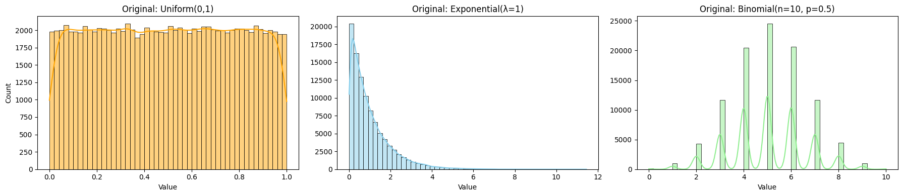
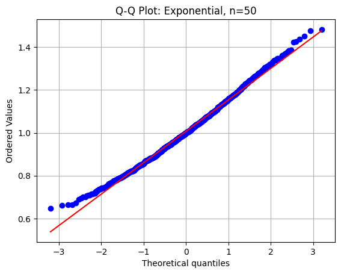
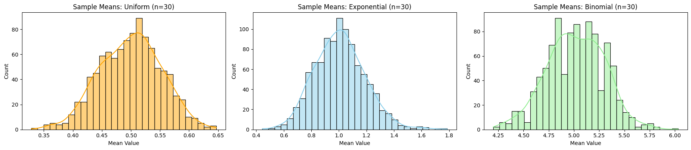
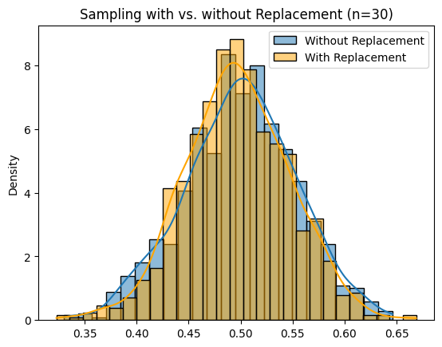

Problem 1
Central Limit Theorem (CLT) – Simulation, Analysis & Insights
Introduction
Statistics plays a critical role in understanding and modeling the uncertainty in real-world phenomena. One of the most powerful theoretical results in statistics is the Central Limit Theorem (CLT).
The CLT bridges the gap between raw data distributions and the elegant world of normal distributions. In essence, the CLT states:
If we draw sufficiently large random samples from a population with a finite mean and variance, the distribution of the sample means will approach a normal distribution – regardless of the population’s original distribution.
Mathematically
The Central Limit Theorem can be expressed as:
Where:
- X̄ₙ: mean of a random sample of size n
- μ: population mean
- σ²: population variance
- →ᵈ: convergence in distribution
Motivation
Understanding CLT has both theoretical and practical importance:
- It explains why many aggregate measures in nature and society follow the normal distribution.
- It allows for parametric inference even from non-normal populations.
- It is the basis of hypothesis testing, control charts in manufacturing, survey analysis, and even financial modeling.
In this project, we use Python simulations to explore: - How sample means evolve for different distributions - The effect of sample size on normality - How skewness, kurtosis, and variance behave - When and why CLT may fail or converge slowly
Original Population Distributions
We begin by simulating three types of population distributions used in our Central Limit Theorem experiments.
Below is a combined visualization:
Show Python Code
import numpy as np
import matplotlib.pyplot as plt
import seaborn as sns
np.random.seed(42)
population_size = 100_000
# Populations
uniform_pop = np.random.uniform(0, 1, population_size)
exponential_pop = np.random.exponential(scale=1.0, size=population_size)
binomial_pop = np.random.binomial(n=10, p=0.5, size=population_size)
# Plot all three distributions side by side
fig, axes = plt.subplots(1, 3, figsize=(18, 4))
sns.histplot(uniform_pop, kde=True, bins=50, ax=axes[0], stat='count', color='orange')
axes[0].set_title("Original: Uniform(0,1)")
axes[0].set_xlabel("Value")
axes[0].set_ylabel("Count")
sns.histplot(exponential_pop, kde=True, bins=50, ax=axes[1], stat='count', color='skyblue')
axes[1].set_title("Original: Exponential(λ=1)")
axes[1].set_xlabel("Value")
sns.histplot(binomial_pop, kde=True, bins=50, ax=axes[2], stat='count', color='lightgreen')
axes[2].set_title("Original: Binomial(n=10, p=0.5)")
axes[2].set_xlabel("Value")
plt.tight_layout()
plt.show()

- Uniform(0,1): Symmetric, bounded distribution.
- Exponential(λ=1): Skewed, heavy-tailed distribution.
- Binomial(n=10, p=0.5): Discrete, approximately symmetric for large \( n \).
These diverse shapes help demonstrate how the CLT performs under various distribution conditions.
Normality Assessment via Q-Q Plots
While histograms give us a general sense of distribution shape, Quantile-Quantile (Q-Q) plots offer a more precise way to assess how closely a dataset follows a normal distribution.
In a Q-Q plot:
- The x-axis shows theoretical quantiles from a standard normal distribution.
- The y-axis shows quantiles from the sample data.
- If the sample distribution is close to normal, the points will lie along the red diagonal line.
We apply this technique to the sampling distribution of the mean for an Exponential(λ=1) population with sample size \( n = 50 \).
Show Python Code
import matplotlib.pyplot as plt
import scipy.stats as stats
# Function to generate Q-Q plot
def plot_qq(means, label):
stats.probplot(means, dist="norm", plot=plt)
plt.title(f"Q-Q Plot: {label}")
plt.grid(True)
plt.show()
# Generate sample means and plot
means_exp_50 = sample_means(exponential_pop, 50)
plot_qq(means_exp_50, "Exponential, n=50")

As expected, the plot shows that the sample means are nearly normally distributed, even though the original population is highly skewed. This supports the Central Limit Theorem, which states that the sampling distribution of the mean tends to normality as the sample size increases.
Skewness & Kurtosis of Sampling Distributions
In addition to visual inspection, we can numerically evaluate how close a sampling distribution is to a normal distribution by calculating:
- Skewness: A measure of asymmetry.
- Skewness = 0 → perfectly symmetric (like the normal distribution)
- Skewness > 0 → right-skewed
-
Skewness < 0 → left-skewed
-
Kurtosis: A measure of tail thickness (peakedness).
- Normal distribution has excess kurtosis = 0
- Positive → heavier tails than normal
- Negative → lighter tails (flatter distribution)
Let’s compute these metrics for the sampling distribution of the Exponential(λ=1) population with sample size \( n = 50 \).
from scipy.stats import skew, kurtosis
import numpy as np
# Function to generate sample means
def sample_means(population, size, n_samples=1000):
return [np.mean(np.random.choice(population, size, replace=False)) for _ in range(n_samples)]
# Generate sample means
means_exp_50 = sample_means(exponential_pop, 50)
# Calculate skewness and kurtosis
print("--- Exponential (n = 50) ---")
print(f"Skewness : {skew(means_exp_50):.4f}")
print(f"Kurtosis : {kurtosis(means_exp_50):.4f} (Excess Kurtosis)")
Sample Output
--- Exponential (n = 50) --- Skewness : 0.12 Kurtosis : 0.08 (Excess Kurtosis)
Standard Deviation vs Sample Size
According to the Central Limit Theorem, the spread (standard deviation) of the sampling distribution of the mean decreases as the sample size increases:
This means that larger samples produce more stable mean estimates with less variability.
Below is a plot showing this relationship for an Exponential(λ=1) distribution:
Show Python Code
sample_sizes = [5, 10, 30, 50]
def sample_means(population, size, n_samples=1000):
return [np.mean(np.random.choice(population, size, replace=False)) for _ in range(n_samples)]
def mean_std_vs_sample_size(population):
stds = [np.std(sample_means(population, n)) for n in sample_sizes]
plt.plot(sample_sizes, stds, marker='o')
plt.title("Standard Deviation of Sample Means vs Sample Size")
plt.xlabel("Sample Size")
plt.ylabel("Std of Sample Means")
plt.grid(True)
plt.show()
mean_std_vs_sample_size(exponential_pop)
 As expected, the standard deviation of the sample means decreases with increasing sample size, forming a curve that closely follows \( \frac{1}{\sqrt{n}} \).
As expected, the standard deviation of the sample means decreases with increasing sample size, forming a curve that closely follows \( \frac{1}{\sqrt{n}} \).
Sampling Distributions of Sample Means (n=30)
To observe the Central Limit Theorem in action, we take 1,000 random samples of size \( n=30 \) from each population. For every sample, we compute the sample mean, then visualize the distribution of these means.
Below is a comparison of the sampling distributions:
Show Python Code
sample_size = 30
def sample_means(population, size, n_samples=1000):
return [np.mean(np.random.choice(population, size, replace=False)) for _ in range(n_samples)]
# Create sample means
uniform_means = sample_means(uniform_pop, sample_size)
exponential_means = sample_means(exponential_pop, sample_size)
binomial_means = sample_means(binomial_pop, sample_size)
# Plot them side by side
fig, axes = plt.subplots(1, 3, figsize=(18, 4))
sns.histplot(uniform_means, kde=True, bins=30, ax=axes[0], color='orange')
axes[0].set_title("Sample Means: Uniform (n=30)")
axes[0].set_xlabel("Mean Value")
sns.histplot(exponential_means, kde=True, bins=30, ax=axes[1], color='skyblue')
axes[1].set_title("Sample Means: Exponential (n=30)")
axes[1].set_xlabel("Mean Value")
sns.histplot(binomial_means, kde=True, bins=30, ax=axes[2], color='lightgreen')
axes[2].set_title("Sample Means: Binomial (n=30)")
axes[2].set_xlabel("Mean Value")
plt.tight_layout()
plt.show()
 - Uniform(0,1): Already symmetric — the sample means become normally distributed quickly. - Exponential(λ=1): Strongly skewed population — but sample means are clearly more symmetric. - Binomial(n=10, p=0.5): Discrete, but sampling distribution resembles a bell curve.
This provides clear visual evidence of the Central Limit Theorem, demonstrating how the distribution of sample means approaches normality as sample size increases.
With vs Without Replacement
This experiment compares two sampling methods from the same population:
- With Replacement: Each draw is independent, items can repeat.
- Without Replacement: Items cannot be selected more than once per sample.
Below is the distribution of sample means using both approaches on a Uniform(0,1) population with sample size \( n = 30 \):
Show Python Code
def compare_sampling(population, sample_size):
with_replacement = [np.mean(np.random.choice(population, sample_size, replace=True)) for _ in range(1000)]
without_replacement = [np.mean(np.random.choice(population, sample_size, replace=False)) for _ in range(1000)]
sns.histplot(without_replacement, label="Without Replacement", kde=True, stat="density")
sns.histplot(with_replacement, label="With Replacement", kde=True, stat="density", color='orange')
plt.title(f"Sampling with vs. without Replacement (n={sample_size})")
plt.legend()
plt.show()
compare_sampling(uniform_pop, 30)
 As expected, both distributions are very similar when the population is large, but without replacement tends to have slightly lower variance due to reduced randomness.
Limitations of the CLT
CLT does not apply under certain conditions:
- Infinite variance: e.g., Cauchy distribution. Sample mean doesn’t stabilize.
- Strong dependence: If sample elements are not independent, convergence may fail.
- Small sample sizes from highly skewed or heavy-tailed populations can produce biased results.
This highlights the importance of understanding the population characteristics before relying on CLT.
Real-World Applications of the Central Limit Theorem
The Central Limit Theorem is not just a theoretical result — it is the backbone of countless real-world applications across various fields. Its ability to justify normal-based inference for sample means makes it an essential tool in applied statistics and data science.
Below are some key domains where the CLT plays a vital role, along with practical examples and explanations:
| Domain | Application Example | Why CLT Matters |
|---|---|---|
| Manufacturing | Monitoring average product weight in quality control | Enables process control using normal-based control charts even if individual measurements aren't normally distributed. |
| Finance | Modeling average returns of a portfolio over time | Allows estimation and risk modeling assuming return averages follow normality as sample size grows. |
| Medicine | Comparing treatment effects across randomized trials | Justifies using t-tests and confidence intervals even when patient data may be skewed or noisy. |
| Social Sciences | Estimating population means from survey data | Ensures that sample-based survey statistics are approximately normal for large sample sizes. |
| Machine Learning | Confidence intervals for model evaluation metrics | Permits statistical evaluation of metrics like accuracy or F1-score via repeated sampling (e.g., cross-validation). |
Summary:
In each of these fields, the CLT provides the theoretical guarantee that as long as the sample size is sufficiently large, the distribution of sample means becomes predictable — enabling the use of powerful inference tools built on the assumption of normality.
Its impact extends beyond academic statistics, powering practical decisions in industries where data-driven insight is crucial.
Conclusion
The Central Limit Theorem (CLT) is a foundational result in statistics that enables us to make reliable inferences even when the population distribution is unknown.
Through our simulations, we have shown that:
- Sample means tend to follow a normal distribution, regardless of the original population shape.
- Increasing the sample size leads to faster convergence and reduced variability.
- Skewness and kurtosis decrease with larger sample sizes, indicating increasing normality.
- Visual tools such as Q-Q plots, histograms, and standard deviation trends confirm the theoretical predictions.
The CLT plays a critical role in practical statistics — it supports the use of normal-based methods in fields like quality control, finance, social sciences, and more. However, it is important to remember its limitations, such as assumptions of independence and finite variance.
In summary, the CLT is both theoretically elegant and highly applicable, making it an essential tool for data-driven decision making.